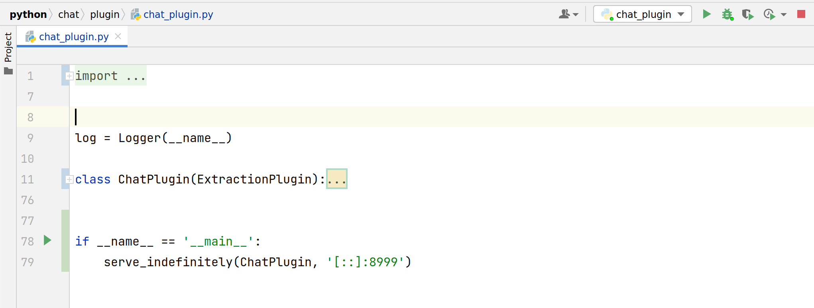
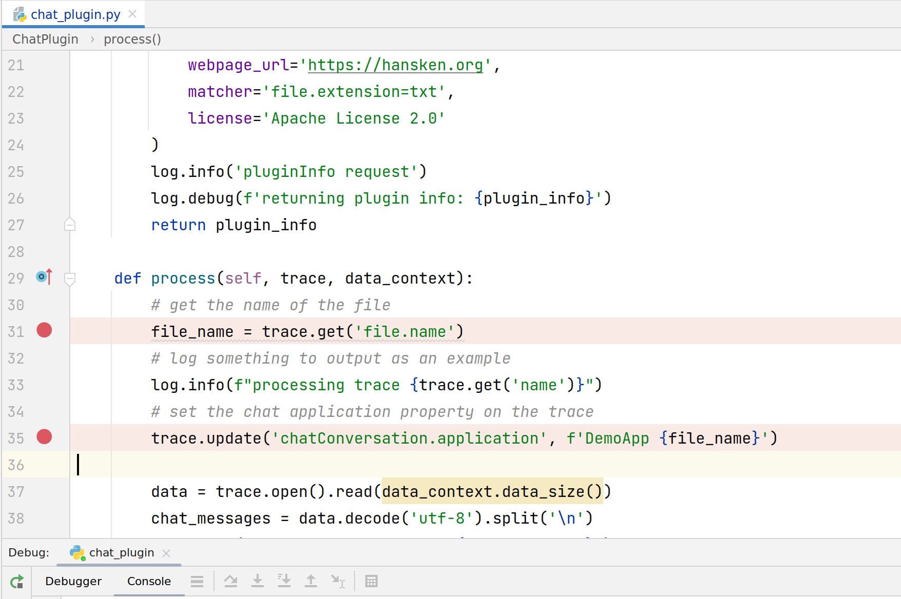
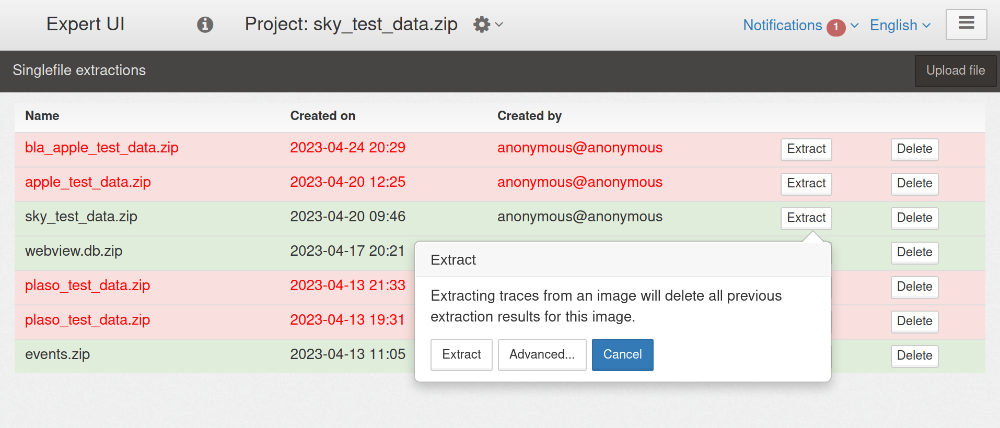
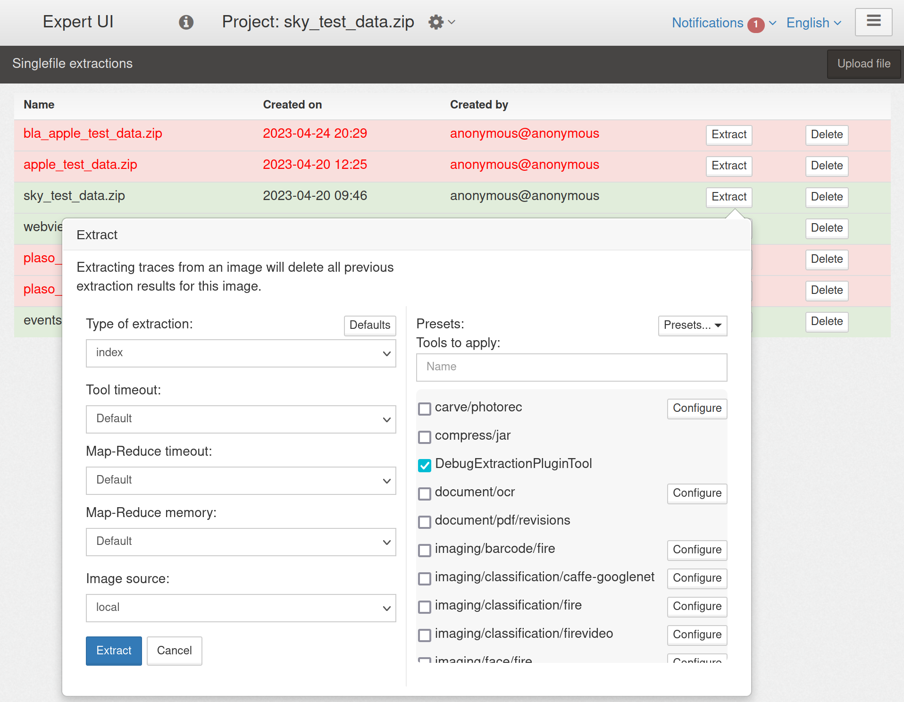

Debugging locally with Hansken All in One (AIO)
Note
this feature is available from Hansken 46.4.0
Warning
DeferredExtractionPlugin are currently NOT supported
It is also possible to debug an Extraction Plugin with a locally running Hansken AIO. This requires a few steps:
Start your plugin in your IDE (default port 8999)
Set some breakpoint(s)
Prepare an extraction in the AIO with advanced options
Enable the
DebugExtractionPluginToolfor this extractionStart extraction, and happy debugging!
{kind=link}
{kind=link}
{kind=link}
{kind=link}
Tips/notes:
You can only debug 1 plugin at a time
Note
If you are debugging
MyPlugin, and it is also visible in the tools list, then you need to disable it, and only enable theDebugExtractionPluginTool
Test your plugin with a small image. Otherwise, it might take long before you reach your breakpoint.
Be careful when using this debugger with
APPENDextractions:Similar to other tools/plugins, the
DebugExtractionPluginToolwill only run once per traceSo if you need to re-run your debug session, then we advise you to re-extract
(INDEX)your project instead
Hansken runs multiple instances of every Tool, so the same breakpoint can be hit multiple times concurrently by different instances
limiting the number of plugin threads/workers can minimize this
Only restart your plugin before starting an extraction. Restarting your plugin during an extraction can produce undefined behaviour.